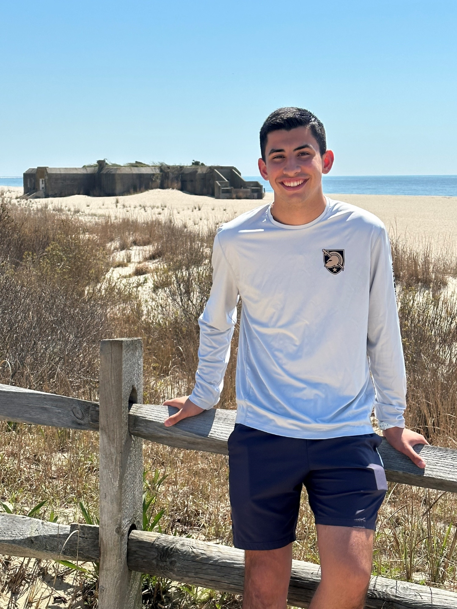

jmoran@rogue-quant-lab:~$ whoami
Cadet, Class of 2027
Department of Mathematical Sciences
United States Military Academy, West Point
status: overclocked on statistics & quantitative financejmoran@rogue-quant-lab:~$ cat lab_notebook.txt
Originally from Long Island, New York — that's home turf. What pulled me into math wasn't the formulas themselves, it was the idea that you can say something rigorous about uncertainty: estimation theory, the bias–variance tradeoff, and models that actually generalize instead of just fitting the data in front of you.
My coursework and projects run through statistical inference, generalized additive and logistic regression models, and machine learning — clustering, SVMs, and neural networks. Most recently I've been pointing that toolkit at two things I genuinely enjoy: quantitative finance, where probability and estimation meet real decisions under risk, and sports analytics, where I've built sabermetrics projects modeling baseball performance.
jmoran@rogue-quant-lab:~$ tail -f fun_facts.log
jmoran@rogue-quant-lab:~$ ls photos/

jmoran@rogue-quant-lab:~$ cat contact.yml
| joseph.moran@westpoint.edu | |
| hometown | Long Island, New York |
| interests | Statistical inference, machine learning, quantitative finance — and sabermetrics |
| off duty | Tennis, running, cooking (and eating) — not necessarily in that order |
jmoran@rogue-quant-lab:~$